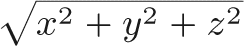

5.8 Designing with Structures
The introduction of structure types reinforces the need for all six steps in the design recipe. It no longer suffices to rely on built-in data collections to represent information; it is now clear that programmers must create data definitions for all but the simplest problems.
This section adds a design recipe, illustrating it with the following:
Sample Problem Design a function that computes the distance of objects in a 3-dimensional space to the origin.
Here we go:
1. When a problem calls for the representation of pieces of information that belong together or describe a natural whole, you need a structure type definition. It requires as many fields as there are relevant properties. An instance of this structure type corresponds to the whole, and the values in the fields correspond to its attributes.
A data definition for a structure type introduces a name for the collection of instances that are legitimate. Furthermore, it must describe which kind of data goes with which field. Use only names of built-in data collections or previously defined data definitions.
In the end, we (and others) must be able to use the data definition to create sample structure instances. Otherwise, something is wrong with our data definition. To ensure that we can create instances, our data definitions should come with data examples.
Here is how we apply this idea to the sample problem:
(define-struct r3 [x y z])
; An R3 is a structure:
; (make-r3 Number Number Number)
(define ex1 (make-r3 1 2 13))
(define ex2 (make-r3 -1 0 3))
The structure type definition introduces a new kind of structure, r3, and the data definition introduces R3 as the name for all instances of r3 that contain only numbers.
2. You still need a signature, a purpose statement, and a function header but they remain the same. Stop! Do it for the sample problem.
3. Use the examples from the first step to create functional examples. For each field associated with intervals or enumerations, make sure to pick end points and intermediate points to create functional examples. We expect you to continue working on the sample problem.
4. A function that consumes structures usually—though not always—extracts the values from the various fields in the structure. To remind yourself of this possibility, add a selector for each field to the templates for such functions.
Here is what we have for the sample problem:
; R3 -> Number
; determines the distance of p to the origin
(define (r3-distance-to-0 p)
(… (r3-x p) … (r3-y p) … (r3-z p) …))
You may want to write down next to each selector expression what kind of data it extracts from the given structure; you can find this information in the data definition. Stop! Just do it!
5. Use the selector expressions from the template when you define the function. Keep in mind that you may not need some of them.
6. Test. Test as soon as the function header is written. Test until all expressions have been covered. Test again when you make changes.
Finish the sample problem. If you cannot remember the distance of a 3-dimensional point to the origin, look it up in a geometry book.
There you will find a formula such as

.Exercise 80. Create templates for functions that consume instances of the following structure types:
• (define-struct movie [title director year])
• (define-struct pet [name number])
• (define-struct CD [artist title price])
• (define-struct sweater [material size color])
No, you do not need data definitions for this task. 
Exercise 81. Design the function time->seconds, which consumes instances of time structures (see exercise 77) and produces the number of seconds that have passed since midnight. For example, if you are representing 12 hours, 30 minutes, and 2 seconds with one of these structures and if you then apply time->seconds to this instance, the correct result is 45002.
Exercise 82. Design the function compare-word. The function consumes two three-letter words (see exercise 78). It produces a word that indicates where the given ones agree and disagree. The function retains the content of the structure fields if the two agree; otherwise it places #false in the field of the resulting word. Hint The exercises mentions two tasks: the comparison of words and the comparison of “letters.”